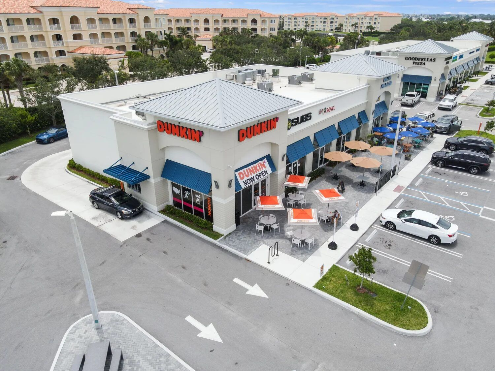

Commercial glazing install day is where weeks of planning meet a narrow window of field execution. Frames arrive on a truck. The crane or boom lift is staged. Crews need clear access, clean openings, and coordinated utility shutoffs. If any one of those elements is missing, install day turns into a standby day - crews stand around, the crane bills by the hour, and the GC's schedule slips. Good pre-install preparation prevents that outcome. This article is a PM and facility manager checklist covering the eight items that need to be ready before the glazing crew rolls up: rough openings, tenant notice, utility coordination, staging, floor and interior protection, weather contingency, dust control, and trash removal. Each one is simple individually, but missing any one of them puts the install at risk.

Eight-Item Pre-Install Checklist
The list below applies to typical commercial glazing installs - storefront replacement, impact window retrofit, curtainwall sections, and entry door packages on occupied or near-occupied buildings. New construction work on empty shells has a simpler version of this list because tenant coordination and protection are reduced. See the new construction glazing workflow for ground-up specifics.
1. Openings Are Prepped and Ready
On new construction or retrofit, the rough openings need to be framed within tolerance (typically +/- 1/4 inch of the shop drawing dimensions), cleared of debris, and free of protruding fasteners. On retrofit, the old units need to be removed and disposed of before the new units arrive - unless the crew is doing the removal as part of the scope, in which case the schedule absorbs that time.
On pre-glazed storefront, openings especially matter because the factory-assembled units arrive as finished products. If the rough opening is 3/8 inch off from shop drawings, the unit won't fit cleanly and field modification is either impossible (you can't trim the factory-glazed assembly) or warranty-voiding. A pre-install opening inspection with the glazing sub and GC superintendent catches problems before the truck arrives.
Checklist:
- Rough openings measured and verified against shop drawings within 48 hours of delivery
- Openings cleared of old frame, glass, sealant residue, protruding anchors
- Sub-sill pan installed on applicable openings (waterproofing scope)
- Air/water barrier continuous at opening perimeter
- Any out-of-tolerance openings documented with photos and shared with glazing sub
2. Tenant Notice Two-Plus Weeks Out
On occupied buildings, tenants need advance notice of install dates, noise expectations, dust implications, and any temporary access changes. Two weeks is the minimum for office and retail tenants; four weeks is better for restaurant, healthcare, or hospitality tenants with operational sensitivities. The notice should include:
- Specific dates and hours of work (including weekend work if applicable)
- Which openings are affected each day
- Temporary security provisions if openings are exposed overnight
- Dust protection measures in adjacent interior spaces
- Contact info for the GC's on-site superintendent
On occupied multifamily work, unit-level coordination is especially important because crews are entering units, not just exterior spaces. Bradley Daytona is a good reference for how occupied multifamily glazing sequences against tenant presence.
3. Utility Shutoffs and Coordination
Several utilities at the building need coordination on install day:
- Security alarms. Opening existing windows triggers security systems in many buildings. Monitoring company needs to be notified of the install window or the crew will deal with alarm calls all day.
- HVAC at the openings. Rooftop units serving zones adjacent to the install area may need to be off or reduced during install to prevent dust infiltration and to manage pressure differentials while the opening is exposed.
- Fire alarm panel. On buildings with smoke detection near openings, dust-sensitive detectors need to be bagged or the zone put in test mode.
- Automatic entrance systems. If the scope includes automatic sliding door work, the door's power and motion sensors need to be isolated and the door held manually or locked during work.
4. Staging Area for Material, Lift, and Crew
Glazing install requires staging space that's bigger than most GCs initially allocate. A typical storefront delivery includes factory-assembled units on pallets, crating material, glass offload, and a lift or crane. Requirements:
- Level staging area within 100 feet of the install face, ideally within 50 feet for crane or boom lift reach
- Clearance for a 26-foot articulating boom lift or a mobile crane depending on install height
- Pedestrian and vehicle protection around the staging area
- Overnight security or return-to-base plan for lift equipment if the install spans multiple days
- Local permit for lane closure or sidewalk closure if the staging requires public right-of-way use
5. Floor and Interior Protection
Inside the building, floor protection needs to run from the loading area to every opening being installed. On finished occupied buildings, this is a significant item - Masonite or Ram Board over carpet, plywood over hardwood, and wall corner protection in tight turns where crews carry material.
For upper-floor installs, material gets moved vertically, so freight elevator reservation (with interior protection inside the car) is usually needed for the duration of the install. On stair-moved installs, stair tread protection is critical.
6. Weather Contingency Plan
Florida weather turns fast, especially in summer. Install day without a contingency plan for afternoon thunderstorms becomes a water intrusion event if openings are exposed and the weather hits. Contingency measures:
- Daily install sequence planned around weather forecast (open, install, close within the same weather window per opening where possible)
- Poly sheeting and weighted ballast on site to seal exposed openings quickly
- Decision tree for stopping work: wind speed threshold for crane operation (typically 25 mph), lightning proximity, and heavy rain
- Temporary dry-in plan if weather hits with openings exposed
7. Dust Protection for Adjacent Spaces
Glazing install creates less dust than demolition work, but cutting perimeter sealants, drilling anchors, and grinding existing frame residue all generate fine dust that will migrate through open interior. On healthcare, commercial kitchens, clean manufacturing, and office tenants with sensitive equipment, dust barriers matter. Typical measures:
- Poly sheet barriers sealed to floor, ceiling, and walls at tenant space boundaries
- Negative air machines on healthcare or critical-environment tenants
- HEPA vacuum cleanup at end of each day inside the work zone
- Return-air filter inspection and replacement in affected HVAC zones after install
8. Trash Removal Plan
Glass, aluminum frame cutoffs, packaging material, and old unit removal all need a disposal path. On large scopes, a dedicated dumpster on site is standard. On smaller scopes, the crew typically bags and removes to their shipping truck. Either way, the path needs to be clear:
- Dumpster location and access route documented
- Glass separation (glass often goes to a separate container because of safety and recycling)
- Scrap aluminum recycling coordinated with a metals buyer where economically justified on large scopes
- End-of-day cleanup expectations spelled out in the contract
Install Day Hour-by-Hour
A typical storefront install day on a 40-unit scope runs like this, assuming pre-glazed units from ESWindows or equivalent:
| Time | Activity |
|---|---|
| 6:30-7:00 AM | Crew arrival, safety briefing, site walk-through |
| 7:00-7:30 AM | Material offload, staging setup, lift positioning |
| 7:30 AM-12:00 PM | Frame set, shim, anchor on 20-25 units (roughly 1,000 SF in AM block for pre-glazed) |
| 12:00-12:30 PM | Lunch break |
| 12:30-4:00 PM | Continued frame set + perimeter sealant start on AM units |
| 4:00-5:00 PM | Cleanup, material return, dry-in on exposed openings, next-day prep |
That pace is pre-glazed rate - roughly 1,000 SF per day per crew, versus roughly 500 SF per day for stick-built install where the crew is field-glazing each unit. On multi-day installs, the same sequence repeats with each day picking up where the previous ended.
Day-Of Checklist for the GC Superintendent
- Site walk with glazing foreman at 7:00 AM, confirming openings and sequence
- Lift equipment inspection and area clearance
- Tenant communication check: anyone on site today should know work is happening
- Weather check and contingency plan confirmed
- Utility shutoffs per the coordination plan
- Mid-day walk-through with glazing foreman at 1:00 PM
- End-of-day walk-through: verify dry-in of exposed openings, confirm tomorrow's sequence
- Dust and debris cleanup verified before tenant arrives (if occupied)
Reference Project
Harbour Cay II in Fort Pierce is a reference point for mixed-use install sequencing with multiple tenants. The glazing scope coordinated with concrete, waterproofing, and interior finish trades across occupied adjacent spaces.
Ready to Schedule an Install?
ACG's install scheduling includes a pre-install coordination meeting with the GC superintendent to walk the checklist above. Send plans via bid.html for scope and pricing, and the install planning kicks off after award. GCs in Tampa, West Palm Beach, and across Florida can have detailed pricing, schedule, and install plan inside 48 hours through the contact page. ACG is CGC-licensed (CGC1531993), delivering commercial projects across Florida, and installs commercial systems listed at manufacturers.html.